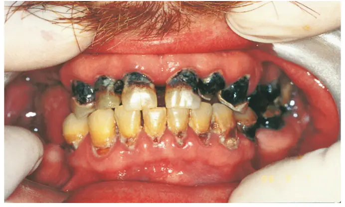
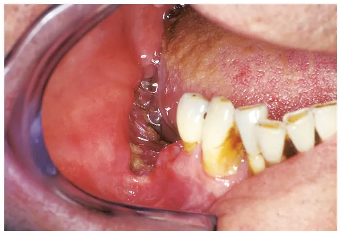

نسخه استخراجشده؛ ترجمه یا تأیید علمی انجام نشده است. وضعیت: captured
آقای ۶۲ سالهای دو سال پیش برای سرطان قاعدهی زبان رادیوتراپی شده است. دهانش خشک است، بزاقش غلیظ و کشدار است و روی سطح سرویکال و لبهی انسیزال چند دندان پوسیدگی تازه دیده میشود. چرا؟

رادیوتراپی (پرتودرمانی) سر و گردن معمولاً پنج روز در هفته و تا ۶ یا ۷ هفته داده میشود. عوارضش به محل تابش بستگی دارد.
برای خشکی دهان: آب زیاد، آدامس و آبنبات بدون قند، پرهیز از قهوه، چای و الکل، و در صورت نیاز داروی محرک بزاق مثل پیلوکارپین یا سویملین که آگونیست موسکارینیاند.
استئورادیونکروز (ORN) یعنی استخوان پرتودیدهی فک که نکروز شده و در دهان بیرون افتاده است. تابش، استخوان را کمسلول، کمرگ و ایسکمیک میکند؛ این استخوان پس از آسیب بهسختی ترمیم میشود. عارضهای دیررس است و سالها بعد هم رخ میدهد.

اکسیژن پرفشار (HBO): HBO پیشگیرانه پیش از کشیدن دیگر کار روتین نیست و خودش عارضه دارد (آسیب گوش میانی، نزدیکبینی، تشنج). اگر لازم باشد، جراح فک و صورت تصمیم میگیرد.
درمان ORN معمولاً محافظهکارانه است: کلرهگزیدین دو بار در روز، برداشتن سکستر لق و آنتیبیوتیک اگر تورم و چرک هست. پنتوکسیفیلین همراه توکوفرول (ویتامین E) هم به کار میرود. موارد مقاوم رزکسیون لازم دارند.